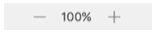

Storyboards
- Interface Builder opens whenever selected an XIB file (.xib) or a storyboard file (.storyboard) from the project navigator
XIB
- An XIB file contains user interface for a single visual element, i.e. full-screen view, a table view cell, or a custom UI control
- Were used more heavily before the introduction of storyboards
- Still a useful format in certain situations
Initial View Controller
- To open, click Main.storyboard in the project navigator to open the file in Interface Builder
- In the center of the screen, the single scene with a plain white view on a black canvas
- The scene is called the initial view controller, the first screen that appears when the app is opened
- You can add more scenes to the storyboard, and drag them anywhere on the canvas
- To see more view controllers at once, use two fingers on a Multi-Touch trackpad to pinch and zoom the canvas out or to zoom in on a particular view

Interface Builder Layout
- To the left of the main canvas is the Document Outline view
- To reveal the Document Outline Review, click the Show Document Outline Button in the bottom left corner of the canvas
- The Document Outline displays a list of each view controller in the scene, along with the a hierachical list of the elements within each view controller
Outlets and Actions
- Often need a way to refrence your visual elements in code so that can be adjusted at runtime, or when the app is already running
- This refrence from Interface Builder code if called outlet
- When you have an object that you want the user to interact with, create action - a refrence to a piece of code that will execute when the interaction takes place
- Select the view controller in outline view, then select Identity inspector
- The template chosen when creating the project has set the Custom Class to ViewController
- Open the Assistant editor, shows the definition of ViewController displayed alongside storyboard (since it corresponds to Custom Class field in Identity inspector)
- However, ViewController class doesn't have access to the button added
- To make the object accessible code, create outlet
- Creating an Outlet
- Control-click (or right-click) the button in storyboard, then start dragging toward Assistant editor pane, contains ViewController class definition
- As you drag the cursor into the code, a blue line appears
- Release the cursor, "Outlets and Actions" dialog appears, with Outler selected as Connection type
- In Name field, specify a variable name for button: 'myButton."
- Click the Connect button to finalize creation of outlet, generating line of code defining outlet
- Creating an Action
- Control-click (or right-click) button in storyboard, then drag cursor into ViewController class definition
- When "Outlets and Actions" dialog appears this time, need to switch Connection from Outlet to Action
- in this situation, entry in Name field deos not define variable; defines action the button tap is tied to
- Name the action "buttonPressed." Click the Connect button to finalize creation of action
Outlet Definition
- Circle - The filled circle indicates outlet is connected. If circle empty, variable is not connected anything
- @IBOutlet - Unique to Interface Builder, keyword specifies relationship between variable and storyboard. Without @IBOutlet keyword, the circle doesn't display
- weak - This keyword describes details about relationship between ViewController and myButton
- var myButton - Declares variable called "myButton"
- : UIButton! - Tyoe of the preoperty is UIButton, button type within UIKit framework. Exclamation point warns the program will crash if this property is accessed and outlet is not connected
A Note About Interface Builder
UILabel
- Symbols, or properties and functions, for the UILabel
- Interface Builder Attribute and Property Name